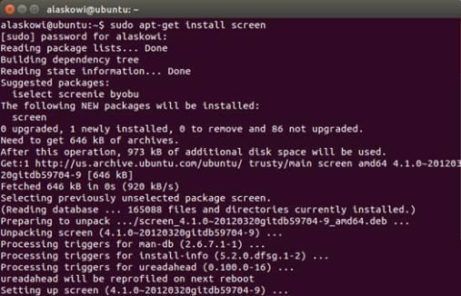

-
Launch Terminal.
-
Install Screen via the
apt-get installcommand.sudo apt-get install screenYou may be asked for your root password. Type in your root password and press Enter.
-
Wait for Screen to finish downloading and the installation to complete.

You should now have a shell session manager for your Terminal.
To confirm that it has been installed, you can run the screen command with the --help flag to see what your options are.
sudo screen --help